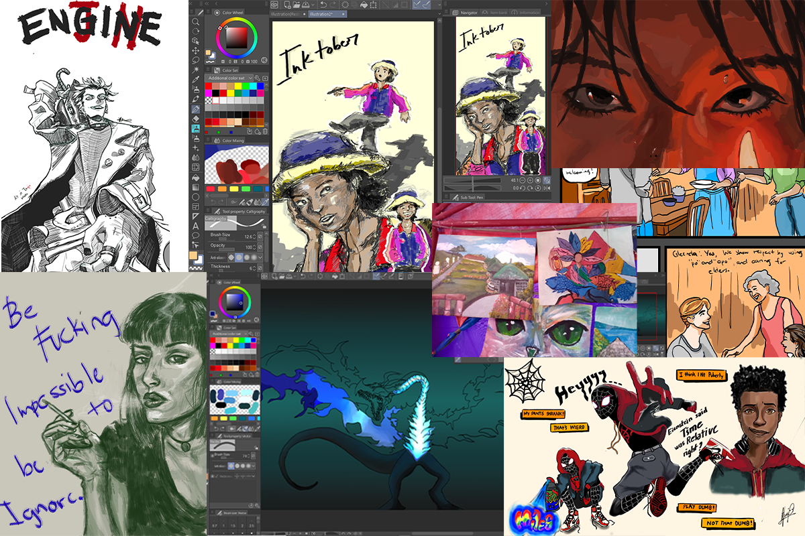
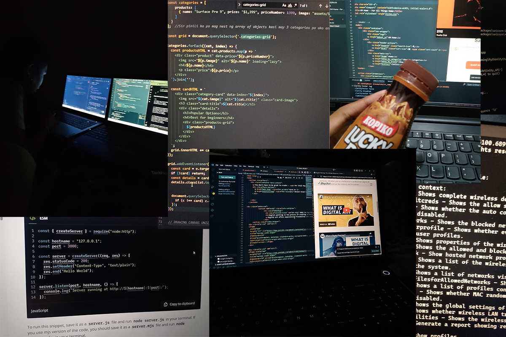
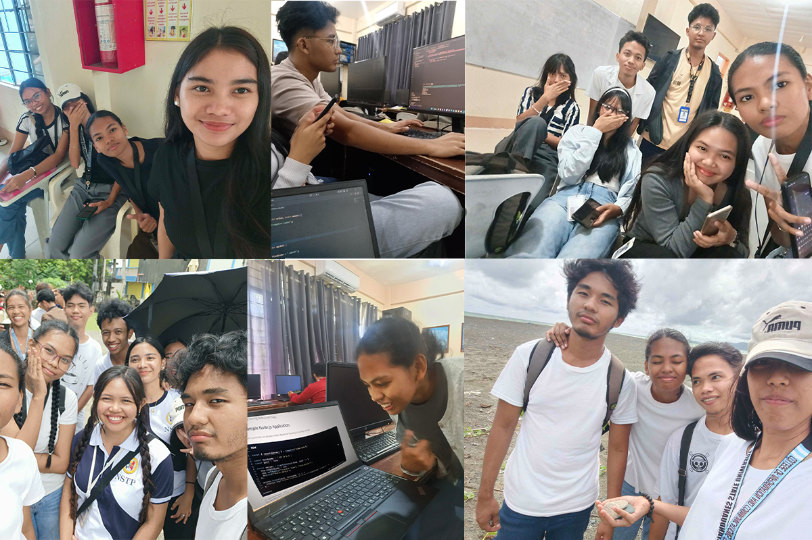

"Some paths choose you more than you choose them... but maybe that's okay if you can still make something of your own along the way."
Let's put aside the technicality of IT, and be more personal ;P
I'm Emily, a BS Information Technology student at Catanduanes State University, and yeah, sometimes I still quietly ask myself: did I choose the right path?
Don't get me wrong,it's not like I'm hating every second of it. I like tech stuff and computers; it actually piqued my interest. But if I'm being real, my heart leaned more toward creative stuff growing up. I love drawing, sketching random ideas, turning doodles into something alive on paper or screen. In high school, I was eyeing BSEMC-Entertainment and Multimedia Computing, where you blend art, animation, games, design. That felt more "me".
But life, right? Practicality won, passion took a backseat, and here I am.

They say this program has more job chances, steadier/higher paychecks,but no one talks about how saturated the tech market is these days. Tons of grads fighting for the same entry-level spots, companies asking for 2–3 years experience even for juniors. It makes you wonder if this path is still worth it.
On my first year it felt like "meh". Countless fundamental programming lectures, debugging for hours, staring at error messages that make no sense. My interest was mid at first, though along the way I've started to find some satisfaction whenever the program works or I solve a particularly tricky problem.
Being an IT student is a grind. The logic part gets me the most. Why does this code run perfectly once, then break for no reason? I waste hours trying to figure out bugs. One wrong semicolon or misplaced bracket and it's chaos. Super frustrating when you're new to it all. (But hey, everybody's bad at their first time ;})
The workload piles up quick too. Quizzes stack, projects overlap, labs demand time, group work drags on. There are stretches with back-to-back quizzes plus a major coding deadline :{ Sleepless nights turn into routine, lucky day coffee at 3 a.m., reviewing while half-asleep, hoping I remember recursion or arrays on exam day. Struggle's indeed real, hehe.

And here's the part almost nobody warns you about: the program mostly covers basics and the gist. Class shows core ideas, sample code, maybe one demo. But to really get it, or survive tougher projects—you have to learn the rest alone. YouTube at 1.5x, W3Schools rabbit holes, random tutorials till your eyes burn. It's all on you: coast on being average or push deeper, experiment, build extra skills. In this crowded field, coasting won't cut it later. That self-study load feels heavy, but it's how things work. (Discipline is my biggest enemy actually. Self laban kay self yarn)
The bumps, deadlines, uncooperative groupmates, late crams, are real, but so are the good parts. Along the way I've met my dear friends. We share the same struggles, support and uplift each other during tough times. Whenever one is behind, we lift them up. The series of shared burdens, loud laughters, and shared ideas make this journey more bearable.

Also along the journey I've come to realize that IT still gives space to create. I never thought I'd say that at first, but it hit me during our sophomore year first semester, when we learned how to build and design websites, starting with HTML for structure, CSS for the styling and layout, and dipping into JavaScript for the interactive bits (which is actually a pain in the butt cuz it's a lil difficult). We built some websites like e-commerce sites; my fave was when our professor let us make a website related to our hobby, and so I made a website guide for beginners in digital painting. I remember feeling enthusiastic while creating it. I didn't mind the obstacles and exhaustion at all. All I knew was, I'm creating out of passion and not for grades. ("It's the magic of doing what you love" ^_~☆ )
Same with this site, I built it from scratch: pure HTML, CSS, a bit of Tailwind vibe code, no templates, no shortcuts. It took a bit long, but watching it come together felt satisfying.
My creativity isn't gone just because I switched tracks. I refuse to let it fade. That's what keeps this interesting, the chance to build, design, solve in ways that still feel like "me".
To my fellow IT students, especially those navigating this same path at CATSU or elsewhere, remember that we are only in our sophomore year. Our journey as IT students, and really our lives beyond the classroom, are only just beginning. The road ahead will bring more challenges, greater demands, and a field that continues to evolve at a rapid pace. Yet there is real reason for hope. There is no definitively wrong path, only unexpected ones that reveal opportunities we could not have expected. The possibilities remain wide open, provided we are willing to step forward, to take our place at the table, and to view the world from new angles. As Mr. Keating reminds us in Dead Poets Society, by standing on the desk we learn to see things differently, to look at life, learning, and even struggle with fresh perspective. That shift in viewpoint can transform the ordinary into something meaningful. Keep building, keep learning, keep holding onto what makes you uniquely you. The effort we invest now has the potential to lead to a future that is not only fulfilling, but truly our own.
Bonus: You can watch Dead Poets Society to get the reference, promise it's a good 10/10.
Thanks for reading until the end. Carpe Diem!